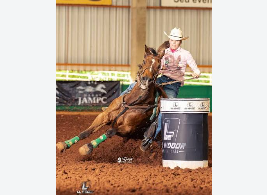

Meu primeiro treino
sejam bem vindos ao meu site irei ensinar a dar uma boa passada nos tambores e insinar de maneira tecnica como funciona esse mundo
por:Nicoly Sperduti Locchetti
Venha conhecer mais sobre os cavalos e eles sendo atletas

sejam bem vindos ao meu site irei ensinar a dar uma boa passada nos tambores e insinar de maneira tecnica como funciona esse mundo
por:Nicoly Sperduti Locchetti